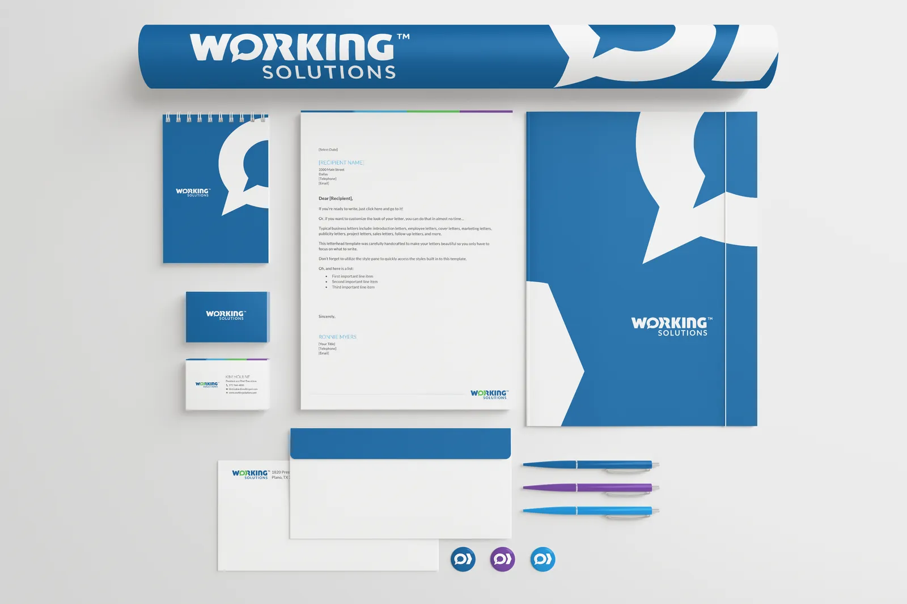
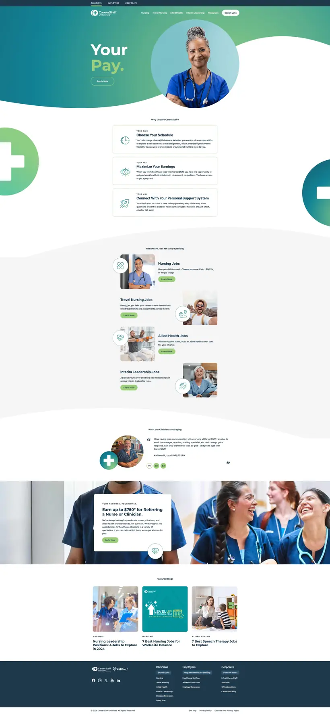
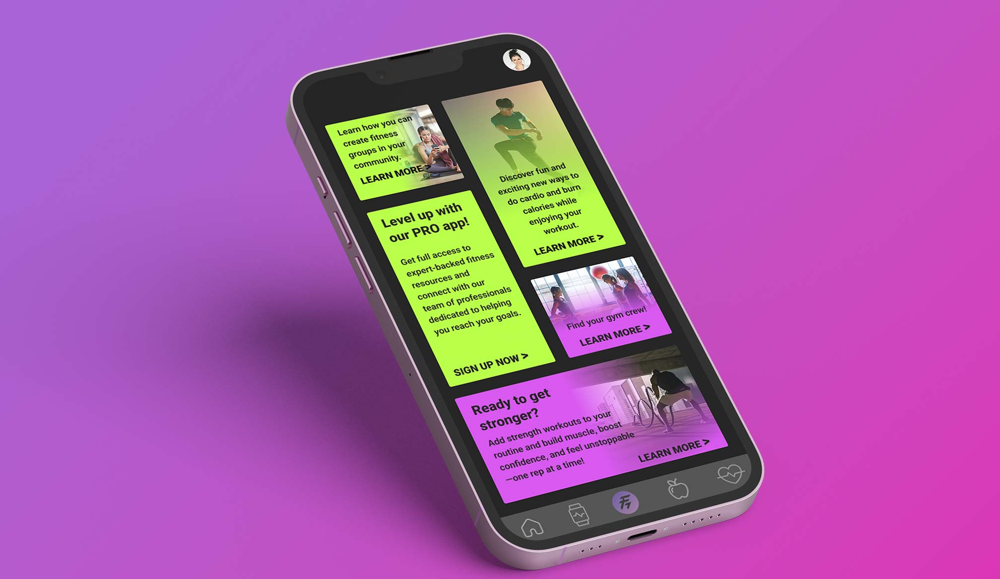
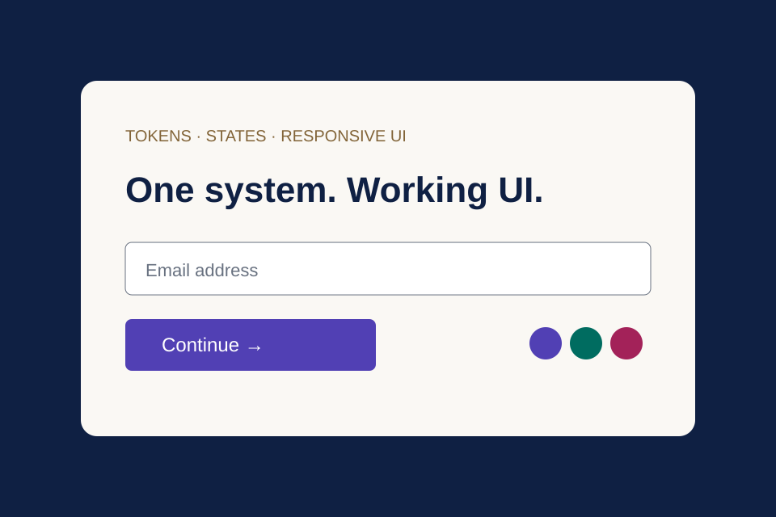
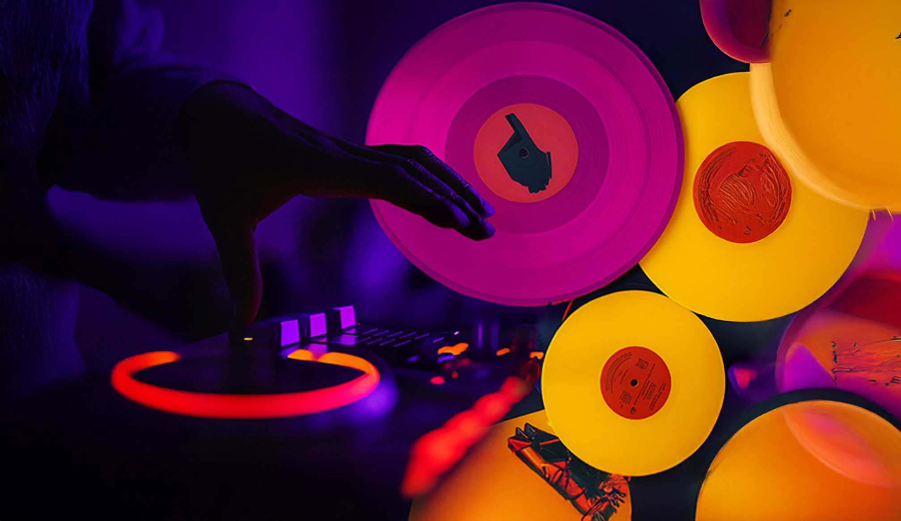

HECTOR OSUNA · SENIOR VISUAL & UI DESIGNER
Brand meets
digital possibility.
Distinctive websites. Useful systems. Thoughtful interactions.
I turn complex ideas into digital experiences people can understand and use.
Distinct brands.
One shared framework.
Responsive Figma components bring consistency to ADI’s vendor brand pages, while keeping each brand’s personality intact.

10+ years of visual and digital design 2018 REBRAND® 100 Merit Dallas–Fort Worth
Explore the work.
See the thinking.
From flexible web systems to a complete brand ecosystem, each project connects the idea, the decisions and the delivered experience.
Start with responsive UI and visual systems, then explore research, prototypes and supporting brand work.
-
2023ADI / ResideoScalable brand experiences
-

2018Working SolutionsBrand transformation -

2021CareerStaffWeb & growth -
 2024CaliberIntegrated campaigns
2024CaliberIntegrated campaigns
UI studies & interactive explorations · certification and personal work
-

2025FitNudgeResearch, UI & prototyping -

2026Component LabInteractive portfolio exploration↗ -

2025Music Streaming AppFoundational research
Additional visual work


Craft with a reason. Systems with room to grow.
Understand the audience, simplify the message and explore several visual directions before committing to one. At Working Solutions that meant five logo directions, each tested at one inch and on a building wall.
See the identity explorationTypography, composition, imagery and hierarchy have to survive the trip from a printed poster to a 320-pixel email banner. I build each campaign around one mark and a few rules so it does.
See one message in six formatsReusable components, templates and clear standards keep the visual language intact as the work grows and as more people make it. At ADI, a shared Figma library made responsive page modules reusable across vendor brands.
See the component systemLanding-page engagement after the responsive redesign
Bounce rate on the responsive pages
User interactions and conversions
From the people who watched the work get made.
Make the story tangible. Make the experience matter.
I’d love to bring my brand and web design experience to Figma, creating inventive, accessible marketing experiences that show what the product can do.